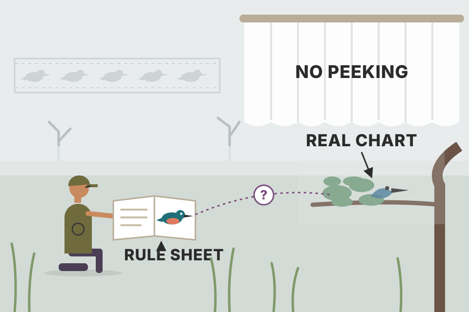
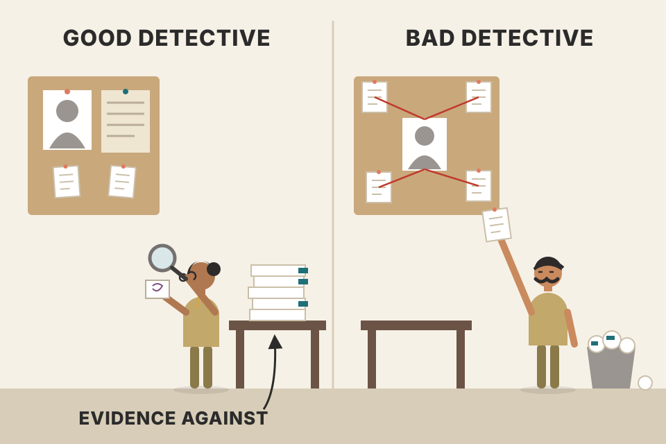
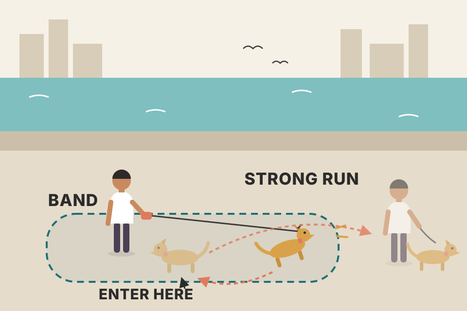
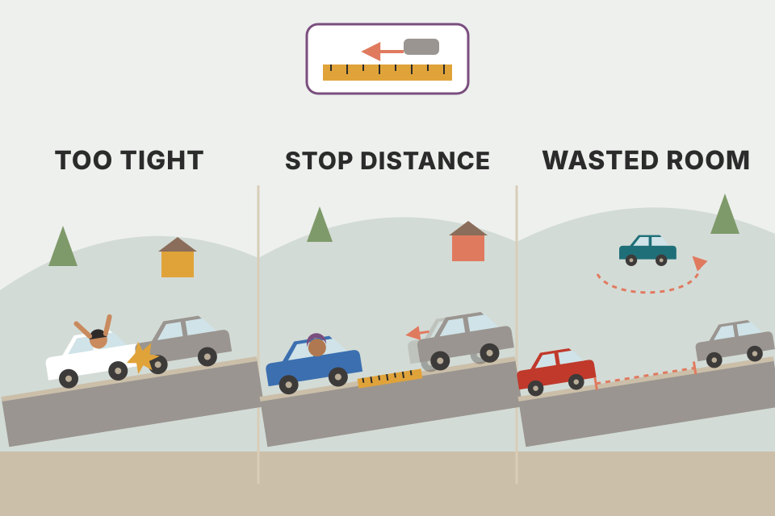

Module 4 has two halves. One is a trade: wait for a trending market to make a strong move, then get in when it comes back toward an average price. The other is a way of working: keep records, define the pattern, test it bar by bar, ask whether you really have an edge, and drop tools (like Fibonacci levels) that can't show one. Every chart on this page uses simulated prices built to show one idea. Simulated results are not evidence that anything works in real markets.
The module is a workbook chapter: four short assignments, then a set of essays. They form one chain. You can't judge a pattern you haven't defined, you can't define it without looking at many examples, and you can't trust it without records and a fair comparison.
Grimes names three focus areas for this module:
The workbook pages for this module mention expected value but don't work through the calculation. Because every later section leans on it, here it is.
Measure every result in R, where 1R is the money you planned to lose if the stop is hit. If you win a fraction p of trades, the average win is W·R and the average loss is 1R, then
This is the same formula as in your Notes/trading/trading_equations.md (its example: 51.5% wins at 2R gives 0.545R per trade before costs).
Expected value is the slope of a road. The road itself is bumpy: 200 drivers on the same slope (the shaded band holds the middle 80% of them) end up in very different places after 100 trades. A small positive slope can still leave many drivers below zero for a long time.
Each run is 100 independent trades with exactly the win rate and payoff you set (simulated). The average path climbs at E per trade, but the spread grows roughly with the square root of the number of trades. That's why Grimes keeps saying you need a significant number of trades before believing a result (section 03) and why asking whether something works is a statistics question (sections 08–09).
Notes/trading/using_equations_to_trade.md runs a sizing Monte Carlo on your 51.5% / 2R setup: the same idea with position sizing on top.Grimes warns that the module looks lighter than earlier ones (fewer pages) but isn't: the work moves from reading to you doing it, and that starts with record keeping.
Start now, today. You can decide the format and contents later. What matters is that it becomes a routine you do consistently, a habit that he expects to play a big part in your success. If you don't know what to write, write that you don't know. Write about how journaling and habit-building feel, what you'd like to change in your life, your trading so far and in future, what you think of the course work. He even suggests writing about kittens: the topic doesn't matter. Write a little every day and let the practice grow.
You also need a P&L sheet that records at least four things per trade: Date In, Price In, Price Out, Initial Stop. You use it in this week's research project (section 03). The initial stop is the field people skip, and it's the one that lets you measure every trade in R.
Row 1: long at 1520 with the initial stop at 1490, so 1R = 30. Sold at 1588: (1588 − 1520) ÷ 30 = +2.27R. Row 3 is a short (stop above entry): in 2310, stop 2350 (1R = 40), out 2268: (2310 − 2268) ÷ 40 = +1.05R. The sheet works out direction from where the stop is, then averages R across rows. That average is the expected value from section 01, measured instead of assumed.
The journal is a diary; the P&L sheet is a lab notebook. The diary tells you how you felt and what you saw. The notebook gives you the numbers that let you check whether those feelings were right.
Without the initial stop you can only record money won or lost, which mixes up the quality of the idea with how big you happened to trade. Dividing by the planned risk turns every trade into the same unit, so trades in a ₹400 stock and a ₹4,000 stock can be averaged together. (R-multiples are standard practice; the four fields are Grimes', the R arithmetic is mine.)
Grimes is clear that this is not a proper, rigorous statistical backtest. It's a process with four aims:
You need historical charts and a record-keeping system. Pencil and paper will do, but electronic is much better. Then you have to define the pattern, which is hard because there is (on purpose) some discretion in it. Don't be discouraged: how you see the pattern will change, and it's exposure to lots of data that changes it. You learn this only by doing it.
Write a rule sheet that answers his five questions:
Then go through data bar by bar, recording the key numbers of each "trade", and notice how it works and how it feels. Your subjective sense counts: at this stage the exercise is as much about you as about the market. It gets easier with practice. A valid test needs a significant number of trades, but this week just start. The replay below is that exercise on a simulated market: you see only the past, press Next bar, and decide.

Learning to see pullbacks is like learning to spot birds. The guidebook (your rule sheet) gets you started, but you only get good after seeing hundreds of real birds in bad light, half hidden. Replay is the bad light: no peeking at what comes next.
Looking at a finished chart, every good pullback is obvious, because you can see how it ended. Hiding the future removes that hindsight. Writing the rules first stops you from quietly changing the definition to fit the examples. Recording the initial stop makes every result comparable in R. These three habits are the core of any honest backtest, manual or coded. (Replay entries fill at the bar's close; stops and targets fill at their level, or at the open if the market gaps past them. Those mechanics are my choices.)
Notes/trading/backtest_results_summary.md is the coded version of this exercise: weekly uptrend (close > 50-week > 200-week average), dip to the 20-week EMA, buy when a week closes above last week's high, 2.5 ATR stop, 2R target.Keep charting by hand all through this module, using whichever method from earlier modules suits you. The details don't matter; doing it does. Grimes says it shouldn't eat your time (he jokes that it isn't a special torture he invented): a few minutes each day, or a few minutes each hour for intraday traders, but every day. The payoff he promises is a deep feel for price action.
Copying a painting by hand teaches you more about it than looking at it a hundred times. Turning four numbers into a bar forces you to notice where the close sits in the range, whether the bar is bigger than the last few, and whether it opened with a gap.
When software draws the chart, you see shapes. When you draw it, you process each open, high, low and close one at a time and compare it to what came before. That slow, repeated comparison is what builds the pattern memory the pullback test depends on.
The readings come from Grimes' earlier book, The Art and Science of Technical Analysis: Market Structure, Price Action, and Trading Strategies (Wiley, 2012). The page numbers are that book's printed pages.
| Printed pages (2012 book) | Topic |
|---|---|
| 65–77 | Pullback introduction |
| 154–169 | Pullback in detail |
| 291–315 | Pullback examples |
| 385–388 | Journaling |
The point of the readings, he says, is to move from big-picture theory to applied patterns. Seeing many pullbacks, and thinking about how to manage trades built on them, gives you ideas for exploring this behaviour further.
books/trading/) has only this workbook, not the 2012 book (the workbook's PDF filename is misleading). Sections 12–16 below cover the workbook's own pullback essay.A few habits separate consistent winners from losers. Winning traders differ widely in strategy and personality, but some threads repeat, and keeping some kind of trading journal is one of them.
A blog reader asked what a daily journal should hold. Should it just describe the day's bars? Should it record the thinking during and after the session? How should the last bar be judged against earlier ones (its range, a doji)? Is studying every daily bar useful for a swing trader, or is that analysing noise when bars only make sense in groups? And the reader wasn't sure that writing it all down was improving their decisions.
Grimes' answer: you need some journal, but there is no single right kind. His points:
A flight recorder has two tracks: the instruments (what the plane did) and the cockpit voice (what the crew did). After an incident, investigators need both to tell a mechanical failure from a pilot error. Two journals do the same for a losing week.
A losing trade can come from a weak setup or from bad execution of a good one. Mixed into one record you can't tell which. Split them and you get two clean questions: "does this pattern have an edge?" (research) and "did I trade it the way I said I would?" (behaviour). That split is also why the replay in section 03 logs the numbers separately from your rule sheet.
projects/trading-equation-backtests/ work is already a research journal. What's missing is the behavioural half.Learning to trade needs two skills that pull against each other: iron discipline over parts of your behaviour and your thinking, and patience and gentleness, because some changes take time and can't be forced. Grimes offers this exercise as a tool for big change, in trading and beyond.
Many writers have said we don't trade the market; we trade our beliefs about it, the enabling ones and the limiting ones. He notes this is true outside markets too: much miscommunication comes from people listening to their own assumptions instead of to each other. Most people rush from one experience to the next without examining what drives them. Grimes cites Socrates' famous line about the unexamined life, and wonders whether everyday distractions exist partly to help us avoid hard questions.
The cleaned lists give insight into your heart and mind. Many effective trading practices combine different kinds of analysis or different ways of being, and this exercise is practice at balancing them. Trading is stressful, and he thinks many people would benefit from working with a mental-health professional at times. This exercise asks you to be your own therapist: next you can start changing limiting beliefs, or learn to work within the beliefs you have. Simply deciding to believe something else is hard, but most people don't even notice how much their beliefs steer their actions and results.
Phase 1 is emptying a drawer onto the floor. Phase 2 is sorting the pile: keep, fix, throw away, wrong drawer. If you sort while emptying, half the drawer never comes out.
Judging while generating makes you censor the beliefs you're embarrassed by, and those are often the limiting ones that matter most. Separating generation from editing (the same reason writers draft before they edit) gets them onto paper first. Nothing typed here is saved or sent anywhere; copy it into your journal.
Markets keep getting more competitive. To make money you need an edge, and you need to understand it. Whatever your method, you're betting that one outcome is more likely than another. Forget that and you slide into thinking some outcome must or will happen, which is dangerous: at best, it is a bit more likely. So how do you check?
Grimes says quant work sounds scary but is simple at its core: look at many past events, define conditions, and see whether those conditions were tied to particular outcomes. Then make a hopefully small leap: if the work was done right, seeing those conditions again should make those outcomes more likely. Each testable statement has a condition and an outcome. His examples (he says some may be true and some false; they're only examples):
You don't need regression or principal component analysis for most of this work (they have their place). His steps:
Define a condition, test it, look at the results. Pencil, spreadsheet or code, it's the same technique.
A doctor testing a drug doesn't ask "did patients get better?" Most people get better anyway. She asks whether patients on the drug got better more often than patients without it. Step 5 (compare with all other data) is the control group.
The tester simulates 80 markets of 600 days, finds every day the condition is true, and counts how often the close H days later is higher. On the pure random walk the condition and the baseline come out about the same, give or take noise: there is no edge to find, so honest testing finds none. Switch to the momentum model (I made each day's return lean slightly in the direction of the previous day's) and new highs start to "work", because I built that in. Two traps a senior engineer will spot: (1) with a look-ahead of 5 days, signals on neighbouring days share most of their future, so they aren't independent; counting them all makes the z-score overstate certainty (the tester therefore counts at most one case per look-ahead window); (2) the baseline isn't exactly 50% even on a random walk, which is why you compare with the baseline and not with 50%. Also, at z = 2, about 1 test in 20 on pure noise will still look significant, so trying many conditions and keeping the best one is its own trap. (The z-score and these traps are beyond the book.)
Notes/trading/indicators/trend_vs_sideways_tools.md used exactly this design: condition (ER, ADX, Choppiness…) → outcome (next period's trendiness) across 185 Nifty 200 stocks, and found none predicts it.Grimes borrows a point from Jack Schwager: you must have an edge to succeed, and if you don't know what it is, you don't have one. Readers then asked how to know. His disclaimer: there are many ways to make money, and his answer is coloured by his own style (a mainly technical trader mixing systematic and discretionary methods). He names places he's fairly sure no edge exists, and admits he may be missing things.
| Your edge must… | What he means |
|---|---|
| be realistic | Avoid arcane approaches, even though some certification programmes teach them (he mentions analysts arguing over the 161.8% Fibonacci extension or wave counts). Prices come from people's buy and sell decisions. He went down the mysteries-of-the-universe path early in his career himself; if your edge depends on magical thinking you're in trouble. Realistic also means uncertain returns: rich and lean periods, no ATM, and an edge that may work for a while and then stop as conditions change. Even a stable edge holds only within fuzzy probability bounds. You have to commit to the process and keep evolving. |
| fit your timeframe | Do fundamentals, 5-minute moves, or cross-market relationships matter? Yes and no, depending on your style. A short-term trader probably shouldn't focus on fundamentals; a long-term trader must filter out noise. |
| be verifiable statistically (probably) | You need basic probability and statistics; there's no way round it, but the maths is simple and learnable in well under a year. You want the idea of statistical significance plus common sense (the card question below). Backtesting has a place and limits. Best path: define rules clearly, test them, then test out of sample or forward before risking real money. Most bad ways to "know" you have an edge (a guru said so, an untested pattern) fail at this step. If you can't codify and test it, you can hardly understand it, and that applies to fundamental approaches too. |
| fit you | Could you sit through 40% drawdowns lasting 2 years, even knowing you'd likely profit long term? If not, don't be a long-term trend follower. Can't watch the market every second? Then you can't day trade. Not ready for a 3–5 year learning curve, with the mental and financial capital to survive it? Then you probably can't trade at all. When a trader at the right stage finds a method that fits like a glove, many struggles seem to resolve on their own, after years of work. |
| be known, so confidence is earned | It's hard to execute without confidence that the edge is real, and you shouldn't have that confidence until you know. Confidence in the wrong thing is a sure path to ruin. |
Grimes poses it and leaves it to you: a shuffled deck deals three red cards in a row. How surprising? Ten more reds? Would you suspect the deck? And if you know the deck is fair, what are the odds the next card is black? He says you should be able to do this quickly, or at least have a solid feel for it.
Three reds from a fresh 52-card deck: 26/52 × 25/51 × 24/50 = 11.8%, so not surprising. Thirteen reds in a row: about 0.0016% (1 in 61,000), so you'd rightly suspect the deck. But if the deck really is fair, the next card is more likely to be black: 26 blacks are left among 39 cards = 66.7%. Cards are dealt without replacement, so past reds change the odds. A coin has no memory: after 13 heads the next toss is still 50%. Knowing which kind of process you face is the real skill. Markets are closer to the coin than most chart readers assume.
With payoff ratio b, the break-even win rate is 1 ÷ (1 + b). The question "do I have an edge?" becomes "is my win rate far enough above break-even that luck is an unlikely explanation?" The standard error of a win rate over N trades is √(p(1−p)/N), so small samples are very noisy: 60 trades can't tell a 45% from a 38% strategy. The calculator shows how many trades the gap you have would need. This is the simple maths Grimes says anyone can learn.
Notes/trading/backtest_results_summary.md). The weekly pullback was profitable in all 8 settings out of sample and beat all 20 random-entry runs.Notes/trading/trader_returns_reality.md collects SEBI's figures on how many intraday and F&O traders lose. That's the same point about day trading made with data.One rule solves most bias problems: if you have a bias on a market, it must be based on something you can see. Watch for emotional commitment. Once you've stated a view publicly (even a tweet or a post in a trading room), it's human to switch to defending it, and that gets traders into trouble.
His mindset fix: as soon as you're in a trade, start looking for reasons it's wrong. Nobody argues like that in daily life, but many traders ignore clear evidence (even a stop being hit) and hold losers far too long. Many accounts, and careers, have ended that way.
It follows that a bias only means something if you can state what would disprove it. His example: short because of a higher-timeframe bias, so the market shouldn't "go up". That needs defining: reasonable higher-timeframe levels shouldn't break, but you probably can't use them as stops, or you'd be trading the higher timeframe. On the trading timeframe, price will swing both ways inside the bigger bias, but you should not see many consolidations resolve easily upward, nor many large standard-deviation spikes upward. If those keep appearing for a while, there is underlying bullish conviction that contradicts your bearish bias. Exactly when to abandon the bias (even before the stop) is debatable; what matters is having defined contradicting conditions.
Compare amateur biases: hating a stock because of its restaurant's food or bad customer service, preferring a competitor's product, wanting revenge for a loss, a tip from a chat room. These mean far less than a disciplined bias you can watch as the market unfolds.
A bias can also blind you to trades against it. A bias is often just a higher-timeframe structure (a day trader bearish from the weekly or daily chart, a position trader from the monthly), and you don't know that it's right. If it's a "good" bias built on structures with a statistical edge, then when it fails it may fail dramatically, and you'd like to be on the right side of that failure. You can't if you're emotionally attached. The better mindset, paraphrased: I'm bearish, but everything in front of me says long, so maybe I should go long on my own timeframe, manage the trade properly and see what happens. Easy once the mindset is built; nearly impossible for a struggling, emotional trader.
Check your biases with three questions: Is it based on something you can see? Can you state clearly what would contradict it? Are you flexible enough to trade against it when needed?

A detective with a suspect. A good detective writes down in advance what evidence would clear the suspect (an alibi, fingerprints that don't match) and looks for it. A bad one only collects evidence that fits. Your "evidence that clears the suspect" is upside spikes and upside breakouts piling up against your short bias.
The chart counts Grimes' two kinds of contradicting evidence. An upside spike is a day whose return is more than 2.5 standard deviations of the previous 20 days' returns. A consolidation is 8 bars whose total range is under 2.5 ATR; it "resolves up" if the first close outside the box is above it. Both thresholds are mine. The meter leans right (contradiction) as upside evidence outweighs downside evidence. The hidden truth is built into the simulation, which is how you can check whether the evidence would have warned you in time. In real markets you don't get to see the truth, only the evidence.
A student asked: every book and site says Fibonacci ratios matter, your stance differs from the CTA programme and most technicians, so what's wrong with them and how did you come to think so? Grimes assumes you know the common uses (retracement, extension and time ratios). Two separate claims are involved:
His first serious look came in college, studying music composition. Using Schenkerian analysis (reducing a piece to its skeleton), he read analysts who said the Golden Ratio shaped many pieces. He examined about 100 examples and spent months on his own analysis, at first excited that he'd found a key to composing, to computer-generated music, even to new tuning systems. What he found: important moments sometimes fell near the ratio, rarely exactly on it, often nowhere close. Major features came at other ratios while a minor detail hit a precise ratio, which supporters then held up as proof. He likens it to hanging a painting and then admiring how the floor tiles meet the wall.
Then the measurement problem. An expert who'd written an influential book told him the ratio failed in a Beethoven sonata because he should measure in inches on the page. Nonsense: music is heard in time, and he found editions of the same sonata 4 pages or 20 pages long, spaced very differently. People pick whatever measure makes the theory fit, something he later met again in trading. Looked at honestly, big moments tend to come after the middle and a bit before the end of a piece, the same dramatic shape as books, plays and films. Composers working for a living following that common-sense shape is far more plausible than someone hiding a cosmic code between the notes.
Learning to trade, he read original sources (Schabacker, Gann, Elliott) and modern books, forgot his music lessons, and was impressed: ratios seemed to explain moves, stops, targets and turns, wrapped in talk of sacred ratios. Five things changed his mind:
His conclusion: you don't need them. He isn't trying to tear things down; Fibonacci levels are probably confusing noise that adds no power to analysis, so put your attention on things that do work.
Throw darts at a wall covered with five wide stripes. Plenty of darts land "on a stripe". That says how much of the wall the stripes cover, not that the darts aimed for them. Draw five Fibonacci levels with a tolerance and you've painted stripes over a large part of the possible retracement range.
The histogram pools retracements from 40 simulated random walks: no Fibonacci structure exists in them, by construction. The hit rate for the Fibonacci levels comes out close to the hit rate for made-up levels, and both roughly track how much of the range the bands cover (the "coverage" figure). That's Grimes' first two points made measurable: some level nearly always "works" after the fact, and random data produces convincing examples. The third chart shows his fourth point: back-adjusting for dividends by difference or by ratio moves the 61.8% level to different prices on today's scale, so a level can't be "where people remember" if nobody agrees which chart is real. (All three simulations are mine; Grimes' own statistical study of retracements is in Module 13.)
Notes/trading/vwap_volume_profile_explained.md records a course checklist that enters at the 67% or 75% Fibonacci retracement of a range. Your backtest notes there found the full-checklist 15-minute setup only a paper-trade lead, not proven. This section is a reason to test whether the retracement depth matters at all before trusting the exact number.Can simple patterns still pay when so much modern quant trading is about volatility and spreads between markets? A qualified yes. Patterns are heuristics, shortcuts: a trader who reads them can get quickly to the core of market structure. Opportunity exists when buying and selling pressure are out of balance, and patterns show that balance fast.
Many patterns have a slight edge on their own, but Grimes thinks far better results come with experience, as you learn to read the action: the mindset moves from taking every pullback to picking the best pullbacks. Classic technical analysis looks for visual symmetry. He suggests that may be wrong: the best patterns often look messy, but they sit in an excellent place in the market's structure.
The key: you are trading the fluctuations in a trending market, so the market must be both trending and fluctuating. Pullbacks are normal in trends, but some very strong trends don't give any; don't force trades then. You don't have to be in every move. Less obvious: a pullback trade is a prediction that the trend will continue, which is a bit different from just spotting that a market is trending.
A staircase going up. Each step up is the strong move; each landing is the pullback. You want to step on at a landing, not halfway up a flight. A ramp (strong trend, no pullback) has no landing. A flat corridor (range) has no stairs at all.
A strong move shows that one side (buyers in an uptrend) has been in control. The pullback is the other side getting a turn while the first side pauses. Buying the pullback bets that the first side comes back for one more leg, so you get in at a better price, and a natural stop sits just beyond the pullback. The bet fails when the "pullback" is really the start of a reversal, which is why sections 13–14 are about filtering.
Notes/trading/intraday_swing_playbook.md setup S-2 (uptrend pullback to the 20-day EMA, then a daily close above the prior day's high) is this two-step recipe in your own rules.Both steps need more skill to do well. First you must read market structure and trends. Noticing that a chart starts at the lower left and ends at the upper right identifies a trend at a high level, but you need a market that will likely keep trending. Juggling the length of swings, lower-timeframe momentum, and exhaustion versus strength helps; Grimes finds these skills grow naturally from trading pullbacks.
Spotting the strong move: use reasonably calibrated bands. Many settings work, but whatever you use should contain roughly 80–90% of the price action. With Bollinger bands, 0.5 standard deviations is probably too close (hit constantly on trivial moves) and 5.0 is probably too far (hit only by the most extreme exhaustion moves). In between there's a wide useful range. Experiment with average length and band width, pick settings and don't change them. The bands give structure that matters as your intuition for structure develops.
His two charts are 2-minute E-mini S&P 500 (ES) futures (he usually focuses on higher timeframes). The first marks bars touching Keltner channels: that's the setup condition. Then you look to enter somewhere near the middle. He has argued at length that moving averages don't act as support or resistance, so he isn't telling you to buy or sell at the average: the average price isn't important; the idea of entering near it is. Tested, there's an edge whether you buy in front of the average or through it, and with many different average lengths. No magic in the average; maybe there is magic in a disciplined, consistent entry. The second chart marks where you might have entered (long or short) near the average after the setups in the first.

A dog on a long lead. The lead (the band) lets it wander; when it hits the end of the lead it has made a strong run (the setup). You don't chase it there. You wait for it to drift back toward you (the average), then walk on together in the same direction.
The band turns "strong move" from a feeling into a rule. A Keltner channel is an EMA plus and minus k times the average true range; Bollinger uses the standard deviation of closes (definitions are standard, not given in this chapter; default settings on this page are mine). The second chart counts, for each width, the share of closes that stay inside: very narrow bands are touched all the time (no information), very wide bands almost never (only climaxes). The 80–90% zone keeps touches meaningful but not rare. In the main chart, ▼/▲ mark the first touch of a setup, and dots mark entries: the first close back at (or through) the entry level within 20 bars. Change "Enter" and the entries shift but don't disappear, which is his point: the level isn't magic; the consistent rule is.
You want a market you believe will trend for at least one more leg, so avoid patterns that signal the end of trends. The most important is exhaustion: don't buy or sell after possibly climactic moves, visible as large-range with-trend bars that often stretch far beyond the band. Grimes believes telling true with-trend strength (or weakness, for shorts) apart from exhaustion may be the key technical skill of with-trend trading. It's rarely discussed, can't be done perfectly, but study lets you dodge the most obvious bullets. It also leads into sentiment and crowd behaviour.
The entry trigger. A useful refinement is a lower-timeframe breakout, as simple as buying a break of the previous bar's high. You can also trade around earlier lower-timeframe pivots (a failure test, for example), which is where strong multiple-timeframe confluence comes in. Some traders scale into pullbacks, which takes discipline newer traders may lack: you're entering a market that is, by definition, moving against you, so you end up "biggest when wrongest" (his phrase). That's dangerous if stops aren't respected.
| Scaling in: price | Units held | Average cost | Open P&L (per unit of 1) |
|---|---|---|---|
| 100 (first buy) | 1 | 100.0 | 0 |
| 98 (second buy) | 2 | 99.0 | −2 |
| 96 (third buy) | 3 | 98.0 | −6 |
| 94 (stop) | 3 | 98.0 | −12 |
The table (my numbers) shows the problem: the position triples exactly while the trade goes against you. Stopped out at 94, the loss is 12 units, against 6 for a single unit bought at 100 with the same stop. Scaling in only works if the stop for the whole position is fixed in advance and sized as one trade's risk.
Strength is a runner finishing a fast lap with breath left. Exhaustion is the sprint at the end of a marathon, the biggest burst of the race, followed by collapse. Both show as a big move; the context (how far beyond the band, after how long a run) tells them apart.
The trigger is a small confirmation: you buy only once the pullback has stopped making lower highs, when price takes out the previous bar's high. You give up a little price for evidence that the with-trend side has returned, and the pullback's low becomes a natural stop. In the step-through, "climax" means a setup bar whose range exceeds 2.5 ATR and closes beyond the band (my thresholds): the filter then skips the trade. This is the same buying-climax idea from Module 3, where a climax bar warns against buying pullbacks right after it.
Mark Fisher kept reminding the traders he trained that the most important thing is knowing where you get out if you're wrong. Know it on every trade, respect it, and you're already ahead of most. The difficulty with pullbacks is that you often enter while the market isn't yet moving your way, so some room ("play") is needed. You can be precise, within limits. You'll learn where stops belong: somewhere beyond the previous extreme. As a very rough starting point, 2–3 ATRs beyond the entry.
Entry ₹1,520, pullback low ₹1,488, ATR ₹22. Beyond the previous extreme (low minus a 0.1 ATR buffer): stop ₹1,485.8, risk ₹34.2 a share. 2 ATR: stop ₹1,476, risk ₹44. 3 ATR: stop ₹1,454, risk ₹66. With ₹5,000 at risk per trade that's 146, 113 or 75 shares. A wider stop means a smaller position for the same rupee risk; the R math doesn't change. (Position sizing is beyond the book.)

Parking on a hill. You leave a gap to the car in front because cars roll back a little. Too small a gap and normal roll-back hits you (stopped out by noise); too big and you've wasted the space. The pullback low is the car in front; ATR measures how much cars roll here.
The previous extreme is the point where the pullback idea is clearly wrong: if price goes past the pullback's low, the with-trend side didn't come back. ATR measures normal bar-to-bar noise, so a stop a couple of ATRs away is unlikely to be hit by noise alone. Grimes gives both as rough guides because they answer different questions: "where is my idea wrong?" and "how much does this market wiggle?"
Notes/trading/tori_trendlines_explained.md skips a trade when the stop (the Safety line) would be more than 3 × ATR from the entry: the same idea of capping how far the stop can be.Grimes finds it helpful to take first profits when the profit equals the initial risk (1R), then scale out of the rest. That doesn't suit traders hoping for home runs, but it drives toward consistency. Other ways exist; the key is to define your style and manage to match it. He's a swing trader, usually playing for one clean swing, so he has to be proactive about taking risk off the table.
Pullbacks in trending markets can also build a large position: get in on a pullback, take partial profits, hold the rest for a swing, then take a second trade if another pullback sets up in the same direction. Manage it the same way: always take partial profits and move stops so that you never have more than one trade's risk on. He calls it a smart and fairly safe way to pyramid into a trend. But sometimes a market gaps hugely, stops get slipped, and the loss is much bigger than planned. Respect risk first.
Taking half at 1R is like banking half your winnings at the casino window before playing on. You won't win the jackpot with all your chips, but you'll rarely walk out with nothing after being well up.
The histogram runs 4,000 simulated price paths from entry with the stop at −1R (my model; exits fill at the price where a level was crossed, so small overshoots count). With "real edge" at 0, every management style ends up with an average near 0R: exits can't create an edge from nothing (in maths this is the optional stopping theorem; beyond the book). What they change is the shape: 1R-then-scale wins more often and has a smaller spread (Grimes' consistency), the trailing style has fewer but larger wins. Add a small real edge and all styles turn positive, by different amounts. The pyramid table shows the rule of never carrying more than one trade's risk: each new trade is only added once the earlier one's stop is at break-even or better. The last step shows the gap caveat.
Notes/trading/using_equations_to_trade.md covers sizing and a kill switch: the risk-first side of this section.This puts the module's two halves together: the pullback rules from sections 13–16, tested with the method from section 08 (compare against a baseline). It is not evidence about real markets. It shows how to set up a fair test and what the result means under each simulated market.
40 simulated markets of 600 bars each (fixed seeds 1–40, not chosen to make a point). Setup: a bar touches the Keltner channel (20-bar EMA ± k × 20-bar ATR; stops use a 14-bar ATR). Entry: within 20 bars, price returns to the EMA, then the trigger fires. Stops and exits as chosen, with a 40-bar time limit. Every entry and exit is at a bar's close (a stop is "hit" when a close goes past it). That's cruder than real stop orders, but filling at prices touched by the wicks of simulated bars quietly leaks future information into the result, and this page would rather be crude than flattering. Long and short sides run independently. Baseline: the same number of entries on random bars, in the direction of the EMA's slope, with the same stop and exit rules. So the baseline already "trades with the trend"; the pullback only beats it if waiting for the dip and the trigger adds something. No costs are charged.
Testing a fishing spot: you don't count fish caught there, you compare with the same rod cast at random spots on the same lake on the same days. A lake full of fish (a trending model) makes every spot look good.
On the random walk, pullback and baseline both average close to 0R, give or take noise: there's nothing to exploit, and no entry rule can invent an edge. On the trend-regime model, both make money because I built drift in, and the gap between them is what timing adds (often nothing measurable). On the momentum model each day leans the way of the day before, and the trigger (a close beyond the previous bar's extreme) can pick up some of that lean; on the mean-reversion model the lean runs the other way. Read the z-score before believing any gap: with 40 markets, differences under about 2 standard errors are noise. The page can't tell you which model real markets resemble. That's what your real-data tests are for.
Notes/trading/backtest_results_summary.md). The same pattern behaves very differently by timeframe, which fits Grimes' point that an edge must fit the timeframe.Date In, Price In, Price Out, Initial Stop. The initial stop gives the planned risk, so (exit − entry) ÷ (entry − stop) is the result in R (section 02).
Training your eye, getting a sense of the edge in your way of seeing the pattern, showing where your perception can improve, and getting used to historical data (section 03).
A market research journal and a personal, behavioural journal separate what the market did from errors you made (section 06).
Comparing with all other data. If all stocks went up 55% of the time over that period, the condition adds nothing. Also: how many independent cases, and does it hold out of sample (sections 08–09)?
26 black cards remain among 39, so 2/3 ≈ 66.7%. Without replacement, the past changes the odds; for a coin it wouldn't (section 09, my worked answer).
Consolidations repeatedly resolving easily upward, and repeated large standard-deviation spikes upward (section 10).
Using them as stops means you're really trading the higher timeframe (risk, holding time and sizing all change). Grimes uses them to define what would disprove the bias, not as stops (section 10).
Some level always works only after the fact; random charts show convincing patterns; the claimants often lacked real track records; adjusted vs. unadjusted charts put levels at different prices; it rests on vague appeals to authority with no quantitative proof (section 11).
Together they cover a large part of the possible retracement range, so many random retracements land near one. The hit rate measures coverage, not predictive power, which made-up levels show just as well (section 11 simulation).
Trending and fluctuating. The trade predicts the trend will continue for at least one more leg (section 12).
0.5 is touched constantly by trivial moves; 5.0 is hit only by extreme exhaustion. Aim for bands holding roughly 80–90% of price action, then don't change the settings (section 13).
No. The average price itself isn't important; the consistent concept of entering near it is. There's an edge buying in front of or through it, with many lengths (section 13).
You add while the market moves against you, so your position is largest when you're most wrong. Without a firm stop, losses balloon (section 14).
Beyond the previous extreme; roughly 2–3 ATR beyond the entry as a starting guide (section 15).
No. It raises the win rate and narrows the spread of outcomes (consistency), but the average stays near 0R. Management changes the shape of returns, not the edge (section 16 simulation, beyond the book).